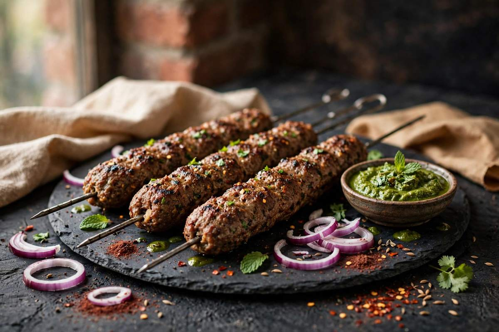
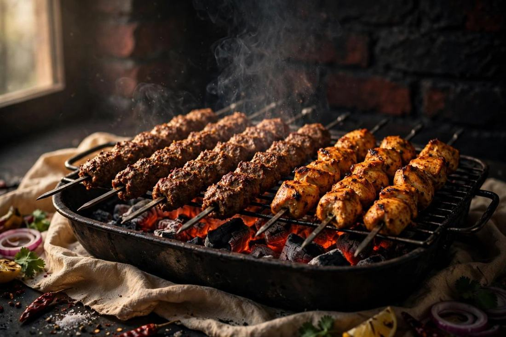

House signature
Beef Seekh Kebab
Hand-minced beef, green chilli and ginger, grilled over charcoal — four skewers.
Rs 995
Demo website — built by Multi-Talented Services as a portfolio sample. Saffron House, its menu and its prices are fictional.

Grill & kitchen · Gulberg, Lahore
Kebabs, karahis and naan from the tandoor — a small Lahore kitchen that prints its prices on the page and answers on WhatsApp.
House signatures
Every signature is on the full menu with its price — no surprises at the table.

Hand-minced beef, green chilli and ginger, grilled over charcoal — four skewers.
Rs 995
Tomato, green chillies and ginger, finished in desi ghee in the wok it is served in.
Rs 1,795

A sealed handi opened at your table, saffron rice with raita on the side.
Rs 645
From the kitchen
Our breads are rolled and baked to order — roghni naan with its sesame and milk wash, garlic naan brushed with butter as it leaves the clay oven. The grill works the same way: nothing sits under a heat lamp, so a kebab reaches you within minutes of leaving the coals.
Saffron House is a fictional restaurant created for this portfolio demo — but the way a real restaurant website should work is exactly this: the menu, the prices, the booking and the order path, all on the page.

Guest reviews
Rated 4.8 out of 5 from 214 Google reviews. The reviews below are demo reviews shown for this portfolio sample.
Visit us
Open every day, 12:00 pm – 12:00 am. Family hall and a quiet corner for working dinners. Parking on Main Boulevard; valet on weekends.